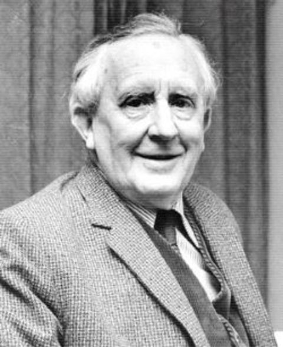
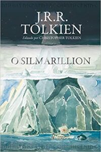
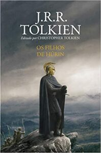
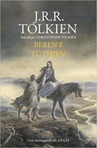
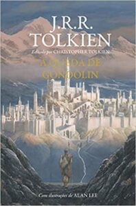
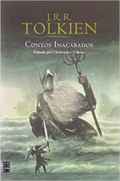
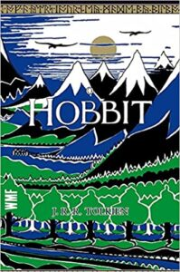
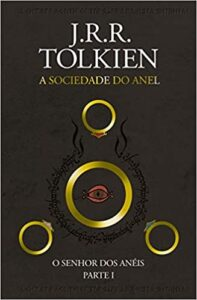
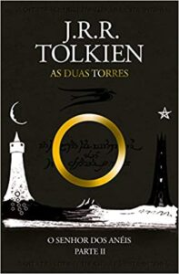
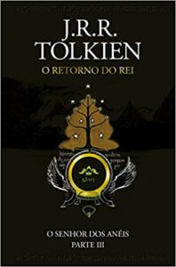

Biografia do J. R. R. Tolkien
J. R. R. Tolkien (1892-1973) foi um escritor, filólogo e professor universitário inglês e autor de Senhor dos Anéis e Hobbit, verdadeiros clássicos da literatura fantástica. Em 1972 foi nomeado Comandante da Ordem do Império Britânico pela Rainha Elizabeth II.
John Ronald Reuel Tolkien, conhecido como J. R. R. Tolkien, nasceu em Bloemfontein, África do Sul, no dia 3 de janeiro de 1892. Filho do inglês Arthur Tolkien, bancário que trabalhava no Bank of África, e de Mabel Suffield Tolkien, viveu na África do Sul até a morte de seu pai em 1896. Nesse mesmo ano mudou com sua mãe e seu irmão para a cidade de Birminghan, na Inglaterra.
A conversão de sua mãe da Igreja Anglicana para o catolicismo lhe marcou profundamente, tornando-se também um católico fervoroso. Em 1908 ingressou no Exeter College, da Universidade de Oxford e logo mostrou interesse pela filologia e por antigas sagas e lendas nórdicas.
Em 1904, após a morte de sua mãe, Tolkien e seu irmão foram entregues aos cuidados do padre jesuíta Francis Xavier Morgan que Tolkien mais tarde o descreveu como um segundo pai.
Especializou-se em línguas Anglo-Saxônicas, língua alemã e literatura clássica na Universidade de Oxford. Em 1914 alistou-se no Lancashire Fusilieres.
Em 1916 casou-se com Edith Bratt. Depois de servir na Primeira Guerra Mundial, continuou seus estudos de Linguística na Universidade de Leeds. Entre 1925 e 1945 lecionou língua e literatura anglo-saxônica na Universidade de Oxford, quando se especializou em literatura medieval.
John Ronald Reuel Tolkien, conhecido como J. R. R. Tolkien, nasceu em Bloemfontein, África do Sul, no dia 3 de janeiro de 1892. Filho do inglês Arthur Tolkien, bancário que trabalhava no Bank of África, e de Mabel Suffield Tolkien, viveu na África do Sul até a morte de seu pai em 1896. Nesse mesmo ano mudou com sua mãe e seu irmão para a cidade de Birminghan, na Inglaterra.
A conversão de sua mãe da Igreja Anglicana para o catolicismo lhe marcou profundamente, tornando-se também um católico fervoroso. Em 1908 ingressou no Exeter College, da Universidade de Oxford e logo mostrou interesse pela filologia e por antigas sagas e lendas nórdicas.
Em 1904, após a morte de sua mãe, Tolkien e seu irmão foram entregues aos cuidados do padre jesuíta Francis Xavier Morgan que Tolkien mais tarde o descreveu como um segundo pai.
Especializou-se em línguas Anglo-Saxônicas, língua alemã e literatura clássica na Universidade de Oxford. Em 1914 alistou-se no Lancashire Fusilieres.
Em 1916 casou-se com Edith Bratt. Depois de servir na Primeira Guerra Mundial, continuou seus estudos de Linguística na Universidade de Leeds. Entre 1925 e 1945 lecionou língua e literatura anglo-saxônica na Universidade de Oxford, quando se especializou em literatura medieval.
Livros
Data de Lançamento 15 de setembro de 1977

O Silmarillion
A leitura desse livro é importantíssima para a total compreensão da história da Terra-Média e uma fonte de imersão no universo criado pelo célebre autor.
Com a presença editorial de seu filho, Christopher Tolkien, O Silmarillion é um relato dos Dias Antigos, ou da Primeira Era do mundo, de Tolkien. Ou seja, podemos considerar que ele seria a primeira obra a ser lida da sequencia de livros de O Senhor dos Aneis
Neste livro, os contos se situam numa era em que Morgoth, o primeiro Senhor Sombrio, habitava na Terra-Média, e os Altos Elfos fizeram guerra a ele para recuperar as Silmarils.
É a história da rebelião de Fëanor e de sua gente contra os deuses, de seu exílio de Valinor e retorno à Terra-Média e de sua guerra, que os personagens de O Senhor dos Anéis têm como referência.
Com a presença editorial de seu filho, Christopher Tolkien, O Silmarillion é um relato dos Dias Antigos, ou da Primeira Era do mundo, de Tolkien. Ou seja, podemos considerar que ele seria a primeira obra a ser lida da sequencia de livros de O Senhor dos Aneis
Neste livro, os contos se situam numa era em que Morgoth, o primeiro Senhor Sombrio, habitava na Terra-Média, e os Altos Elfos fizeram guerra a ele para recuperar as Silmarils.
É a história da rebelião de Fëanor e de sua gente contra os deuses, de seu exílio de Valinor e retorno à Terra-Média e de sua guerra, que os personagens de O Senhor dos Anéis têm como referência.
Data de Lançamento 16 de abril de 2007

Os Filhos de Húrin
Considerada a grande tragédia escrita por J.R.R. Tolkien, Os Filhos de Húrin apresenta uma narrativa ininterrupta e completa. Ao lado de Beren e Lúthien e A Queda de Gondolin, a história é considerada um dos “Três Grandes Contos dos Dias Antigos” que estão dispostos de maneira condensada em O Silmarillion.
O mais poderoso guerreiro que já existiu na Terra-média fora Húrin, cujo orgulho era tão grande quanto sua força física. Ao ser capturado pelas forças de Morgoth, Húrin resiste às ameaças e torturas que lhe foram impostas no cativeiro e ousa zombar do líder maligno. As consequências de sua postura resoluta recaem, na forma de uma maldição, diretamente em sua família.
Sabendo que o Túrin era o misterioso guerreiro no ermo, o Senhor Sombrio despende sua mais temida criatura para trazer desgraça à família de Húrin: Glaurung, o Pai dos Dragões. O lagarto de fogo tece um plano venenoso e intrincado para destruir Túrin, sua mãe Morwen e sua irmã Nienor.
O mais poderoso guerreiro que já existiu na Terra-média fora Húrin, cujo orgulho era tão grande quanto sua força física. Ao ser capturado pelas forças de Morgoth, Húrin resiste às ameaças e torturas que lhe foram impostas no cativeiro e ousa zombar do líder maligno. As consequências de sua postura resoluta recaem, na forma de uma maldição, diretamente em sua família.
Sabendo que o Túrin era o misterioso guerreiro no ermo, o Senhor Sombrio despende sua mais temida criatura para trazer desgraça à família de Húrin: Glaurung, o Pai dos Dragões. O lagarto de fogo tece um plano venenoso e intrincado para destruir Túrin, sua mãe Morwen e sua irmã Nienor.
Data de Lançamento 1 de junho de 2017

Beren e Lúthien
Citada em O Senhor dos Anéis, e cuja história é contada de forma resumida em O Silmarillion, essa obra narra o romance e a jornada épica de Beren, um homem mortal, e Lúthien, uma princesa élfica.
O pai dela, um grande senhor élfico, opõe-se à união e, para permitir o casamento com Lúthien, impõe a Beren uma tarefa impossível de ser realizada.
É este o foco central da lenda: a tentativa incrivelmente heroica de Beren e Lúthien juntos, roubar uma Silmaril do maior de todos os seres malignos, Morgoth, o Sombrio Inimigo do Mundo.
Essa história corresponderia à terceira obra na sequencia de livros de O Senhor dos Aneis
O pai dela, um grande senhor élfico, opõe-se à união e, para permitir o casamento com Lúthien, impõe a Beren uma tarefa impossível de ser realizada.
É este o foco central da lenda: a tentativa incrivelmente heroica de Beren e Lúthien juntos, roubar uma Silmaril do maior de todos os seres malignos, Morgoth, o Sombrio Inimigo do Mundo.
Essa história corresponderia à terceira obra na sequencia de livros de O Senhor dos Aneis
Data de Lançamento 30 de agosto de 2018

A Queda de Gondolin
A Queda de Gondolin narra a trajetória de Tuor, um homem de uma casa outrora nobre, que agora tenta fugir da escravidão para buscar uma mítica e secreta cidade, da qual conhece apenas rumores.
A cidade é Gondolin, o último grande refúgio élfico que ainda resiste ao domínio de Morgoth, o Sombrio Inimigo do Mundo.
Deixando para atrás a servidão e sua terra natal, Tuor sente em seu íntimo que, de alguma forma, não está vagando no ermo, mas que é guiado pelos caminhos que se abrem à sua frente. Essa história corresponderia à quarta obra na sequencia de livros de O Senhor dos Aneis
A cidade é Gondolin, o último grande refúgio élfico que ainda resiste ao domínio de Morgoth, o Sombrio Inimigo do Mundo.
Deixando para atrás a servidão e sua terra natal, Tuor sente em seu íntimo que, de alguma forma, não está vagando no ermo, mas que é guiado pelos caminhos que se abrem à sua frente. Essa história corresponderia à quarta obra na sequencia de livros de O Senhor dos Aneis
Data de Lançamento 29 março 1980

Contos Inacabados
Contos Inacabados de Númenor e da Terra-média é uma coletânea de narrativas que vão desde os Dias Antigos da Terra-média até o final da Guerra do Anel.
Dentre seus contos há um relato de Gandalf sobre como ele enviou os Anãos para Bolsão, uma descrição detalhada sobre a organização militar dos Cavaleiros de Rohan, além de um relato alternativo da lenda dos filhos de Húrin.
A obra contém, ainda, a única história que restou sobre as longas eras de Númenor antes de sua queda, e tudo o que se conhece sobre temas como os Cinco Magos, as Palantíri ou a lenda de Amroth.
Assim como todos os livros lançados postumamente, Os Contos Inacabados foram reunidos e editados pelo filho e herdeiro literário do autor, Christopher Tolkien, que fornece um breve comentário sobre cada história, ajudando o leitor a preencher as lacunas e a colocar cada uma no contexto dos demais escritos de seu pai. Essa história corresponderia à quinta obra na sequencia de livros de O Senhor dos Aneis
Dentre seus contos há um relato de Gandalf sobre como ele enviou os Anãos para Bolsão, uma descrição detalhada sobre a organização militar dos Cavaleiros de Rohan, além de um relato alternativo da lenda dos filhos de Húrin.
A obra contém, ainda, a única história que restou sobre as longas eras de Númenor antes de sua queda, e tudo o que se conhece sobre temas como os Cinco Magos, as Palantíri ou a lenda de Amroth.
Assim como todos os livros lançados postumamente, Os Contos Inacabados foram reunidos e editados pelo filho e herdeiro literário do autor, Christopher Tolkien, que fornece um breve comentário sobre cada história, ajudando o leitor a preencher as lacunas e a colocar cada uma no contexto dos demais escritos de seu pai. Essa história corresponderia à quinta obra na sequencia de livros de O Senhor dos Aneis
Data de Lançamento 21 de setembro de 1937

O Hobbit
Imediatamente anterior à sequencia de livros de O Senhor dos Aneis, ‘O Hobbit’ conquistou sucesso imediato quando foi publicado em 1937.
O livro vendeu milhões de cópias em todo o mundo e estabeleceu-se como um clássico moderno e um dos livros mais influentes de nossa geração.
Ele conta a história de Bilbo Bolseiro, um hobbit que leva uma vida confortável e sem ambições. Mas seu contentamento é perturbado quando Gandalf, o mago, e uma companhia de anões batem à sua porta e levam-no para uma expedição.
Eles têm um plano para roubar o tesouro guardado por Smaug, o Magnífico, um grande e perigoso dragão.
Bilbo reluta muito em participar da aventura, mas acaba surpreendendo até a si mesmo com sua esperteza e sua habilidade como ladrão
O livro vendeu milhões de cópias em todo o mundo e estabeleceu-se como um clássico moderno e um dos livros mais influentes de nossa geração.
Ele conta a história de Bilbo Bolseiro, um hobbit que leva uma vida confortável e sem ambições. Mas seu contentamento é perturbado quando Gandalf, o mago, e uma companhia de anões batem à sua porta e levam-no para uma expedição.
Eles têm um plano para roubar o tesouro guardado por Smaug, o Magnífico, um grande e perigoso dragão.
Bilbo reluta muito em participar da aventura, mas acaba surpreendendo até a si mesmo com sua esperteza e sua habilidade como ladrão
Data de Lançamento 29 de julho de 1954

O Senhor dos Anéis: A Sociedade do Anel
A Sociedade do Anel começa no Condado, a região rural do oeste da Terra-média onde vivem os diminutos e pacatos hobbits. Bilbo Bolseiro, um dos raros aventureiros desse povo, cujas peripécias foram contadas em O Hobbit, resolve ir embora do Condado e deixa sua considerável herança nas mãos de seu jovem parente Frodo.
O mais importante legado de Bilbo é o anel mágico que costumava usar para se tornar invisível. No entanto, o mago Gandalf, companheiro de aventuras do velho hobbit, revela a Frodo que o objeto é o Um Anel, a raiz do poder demoníaco de Sauron, o Senhor Sombrio, que deseja escravizar todos os povos da Terra-média. A única maneira de eliminar a ameaça de Sauron é destruir o Um Anel nas entranhas da própria montanha de fogo onde foi forjado.
A revelação faz com que Frodo e seus companheiros hobbits Sam, Merry e Pippin deixem a segurança do Condado e iniciem uma perigosa jornada rumo ao leste. Ao lado de representantes dos outros Povos Livres que resistem ao Senhor Sombrio, eles formam a Sociedade do Anel
O mais importante legado de Bilbo é o anel mágico que costumava usar para se tornar invisível. No entanto, o mago Gandalf, companheiro de aventuras do velho hobbit, revela a Frodo que o objeto é o Um Anel, a raiz do poder demoníaco de Sauron, o Senhor Sombrio, que deseja escravizar todos os povos da Terra-média. A única maneira de eliminar a ameaça de Sauron é destruir o Um Anel nas entranhas da própria montanha de fogo onde foi forjado.
A revelação faz com que Frodo e seus companheiros hobbits Sam, Merry e Pippin deixem a segurança do Condado e iniciem uma perigosa jornada rumo ao leste. Ao lado de representantes dos outros Povos Livres que resistem ao Senhor Sombrio, eles formam a Sociedade do Anel
Data de Lançamento 29 de julho de 1954

O Senhor dos Aneis: As duas torres
Um ataque-surpresa pôs fim à jornada conjunta da Sociedade do Anel. De um lado, o trio formado pelo elfo Legolas, pelo anão Gimli e por Aragorn, herdeiro da realeza dos Homens, tenta resgatar os jovens hobbits Merry e Pippin, capturados por guerreiros-órquicos. A busca pelos companheiros perdidos levará os três a confrontar os cavaleiros do reino de Rohan e o mago renegado Saruman, que também deseja o Um Anel para si.
Enquanto isso, do outro lado das montanhas, Frodo e Sam buscam uma maneira de entrar em Mordor e chegar até a montanha onde o Anel foi forjado, único lugar onde é possível destruí-lo. Para isso, acabam recebendo a ajuda de seu mais improvável aliado: Gollum, a criatura que chegou a ter o Anel sob seu poder durante centenas de anos e que ainda é devorada, em corpo e alma, pelo desejo de voltar a possuí-lo.
Com cenas que mesclam o heroico e o intimista, o sublime e o cômico, As Duas Torres abriga algumas das criações mais inesquecíveis da imaginação de J.R.R. Tolkien, como os gigantescos Ents e a cultura nobre e belicosa do povo de Rohan.
Enquanto isso, do outro lado das montanhas, Frodo e Sam buscam uma maneira de entrar em Mordor e chegar até a montanha onde o Anel foi forjado, único lugar onde é possível destruí-lo. Para isso, acabam recebendo a ajuda de seu mais improvável aliado: Gollum, a criatura que chegou a ter o Anel sob seu poder durante centenas de anos e que ainda é devorada, em corpo e alma, pelo desejo de voltar a possuí-lo.
Com cenas que mesclam o heroico e o intimista, o sublime e o cômico, As Duas Torres abriga algumas das criações mais inesquecíveis da imaginação de J.R.R. Tolkien, como os gigantescos Ents e a cultura nobre e belicosa do povo de Rohan.
Data de Lançamento 29 de julho de 1954

Senhor dos Anéis: O retorno do rei
A guerra entre os Povos Livres da Terra-média e Sauron, o Senhor Sombrio da terra de Mordor, chega a seu clímax neste terceiro volume do romance O Senhor dos Anéis. As batalhas grandiosas que estão prestes a acontecer, no entanto, são apenas o pano de fundo para o verdadeiro drama: a missão quase suicida dos hobbits Frodo e Sam, que tentam destruir o Um Anel, fonte do poder de Sauron, infiltrando-se no coração do território do Inimigo.
Em O Retorno do Rei, acompanhamos o mago Gandalf e o hobbit Pippin em sua visita à a majestosa cidade de Minas Tirith, que já foi o principal baluarte dos Homens contra a ameaça de Sauron, mas que está prestes a sucumbir diante da força avassaladora do Senhor Sombrio. Outros membros da Sociedade do Anel se juntam a Aragorn, herdeiro da longa linhagem dos reis de Minas Tirith, na tentativa de evitar que a antiga capital do reino de Gondor seja destruída.
Nas fronteiras de Mordor, Sam resgata Frodo, e os dois hobbits partem para o último estágio de sua jornada rumo ao Monte da Perdição, uma jornada que testará os limites do corpo e da mente dos pequenos heróis. O livro inclui ainda numerosos apêndices, nos quais Tolkien explora detalhes da história, das línguas, dos alfabetos e até dos calendários de seu mundo ficcional.
Em O Retorno do Rei, acompanhamos o mago Gandalf e o hobbit Pippin em sua visita à a majestosa cidade de Minas Tirith, que já foi o principal baluarte dos Homens contra a ameaça de Sauron, mas que está prestes a sucumbir diante da força avassaladora do Senhor Sombrio. Outros membros da Sociedade do Anel se juntam a Aragorn, herdeiro da longa linhagem dos reis de Minas Tirith, na tentativa de evitar que a antiga capital do reino de Gondor seja destruída.
Nas fronteiras de Mordor, Sam resgata Frodo, e os dois hobbits partem para o último estágio de sua jornada rumo ao Monte da Perdição, uma jornada que testará os limites do corpo e da mente dos pequenos heróis. O livro inclui ainda numerosos apêndices, nos quais Tolkien explora detalhes da história, das línguas, dos alfabetos e até dos calendários de seu mundo ficcional.